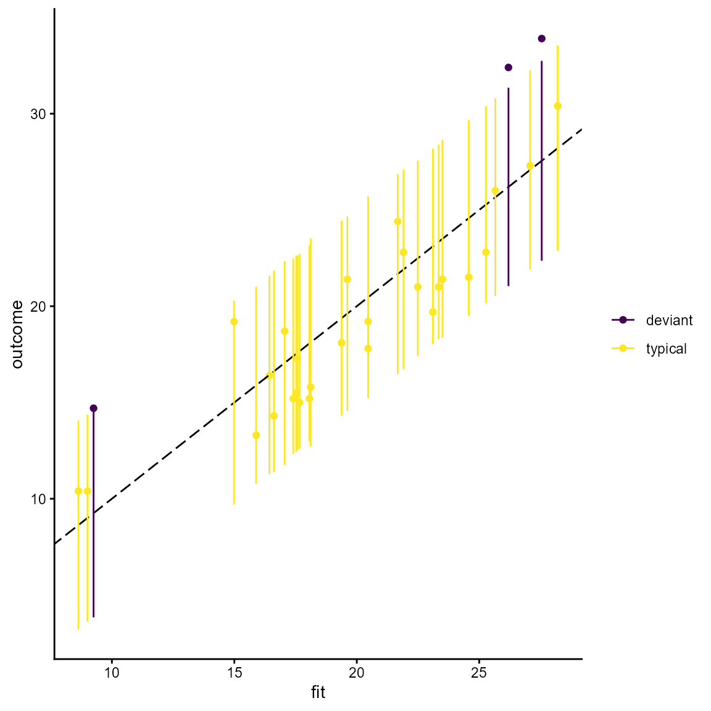
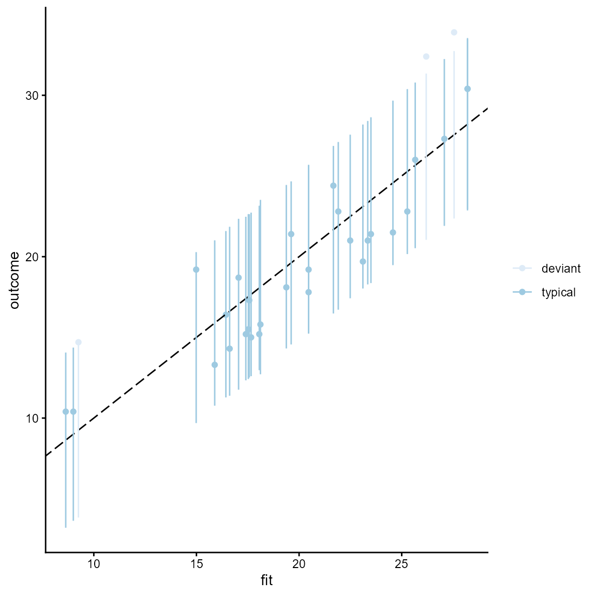
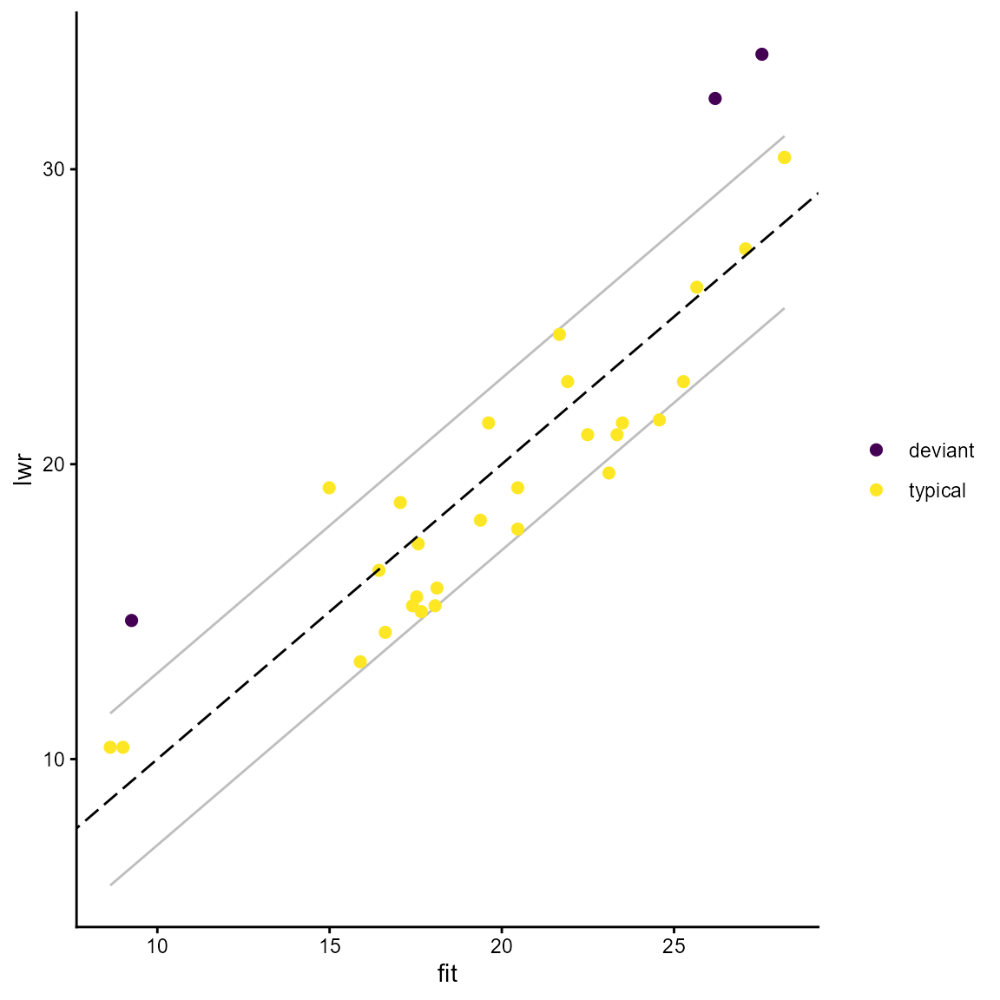

Classification as typical and deviant
Ingo Rohlfing
2026-05-25
Source:vignettes/Classification-as-typical-and-deviant.Rmd
Classification-as-typical-and-deviant.Rmd
library(MMRcaseselection)
library(ggplot2) # for illustration of plot customization
#> Warning: package 'ggplot2' was built under R version 4.5.3The classification (designation, assignment) of cases as typical and
deviant needs to be distinguished from the actual choice of cases that
are of a specific type. The package offers two ways of classifying
cases. First, one can designate cases using the prediction
interval or the standard deviation of the residuals. Both
classification techniques require an lm object as
input.
The approach using the prediction interval additionally requires the specification of the width of the interval. The % prediction interval represents the range of outcome values within which 95% of future outcome values are expected to fall in repeated samples. Following Rohlfing and Starke (2013), a case is designated as typical if the observed outcome value is inside the interval and as deviant otherwise.
Here is a simple example using the mtcars dataset and a
90% prediction interval (for no specific reason, the default value is
0.95). The output of the function is a dataframe with the observed and
fitted outcome values, the upper and lower bound of the prediction
interval and the case status based on the fitted value and the
prediction interval that is specific to each case.
df <- lm(mpg ~ disp + wt, data = mtcars)
pi_df <- predint(df, piwidth = 0.9)
head(pi_df)
#> fit lwr upr outcome status
#> Mazda RX4 23.34543 18.28346 28.40741 21.0 typical
#> Mazda RX4 Wag 22.49097 17.42387 27.55808 21.0 typical
#> Datsun 710 25.27237 20.16282 30.38191 22.8 typical
#> Hornet 4 Drive 19.61467 14.56390 24.66543 21.4 typical
#> Hornet Sportabout 17.05281 11.75986 22.34575 18.7 typical
#> Valiant 19.37863 14.31502 24.44224 18.1 typicalThe designation of cases based on the prediction interval can be
visualized with the predint_plot() command. The graph plots
observed vs. fitted outcome values together with the % prediction
interval. The plot is a gg object and can be edited with
the usual commands of the ggplot2 package.
The input into the plotting function has to be a dataframe produced
with predint(). The color scheme is the viridis color
palette that is accustomed for colorblind readers and also works
when printed in grey scale. If the viridis palette is not preferred, one
can substitute it with any other scale_color_* scheme by
adding it to the command.
predint_plot(pi_df)
# Using scale_color_brewer() instead of the viridis palette.
predint_plot(pi_df) + scale_color_brewer()
#> Scale for colour is already present.
#> Adding another scale for colour, which will replace the existing scale.
An alternative classification technique following Lieberman (2005) uses the
standard deviation of the residuals. The command for assigning
cases and typical and deviant is residstd(). The
specification of stdshare determines how large the share of
the residual standard deviation should be to distinguish typical from
deviant cases. The default value is 1 (for no specific reason).
resid_df <- residstd(df, stdshare = 1.5)
head(resid_df)
#> fit residual.scale outcome status
#> Mazda RX4 23.34543 2.916555 21.0 typical
#> Mazda RX4 Wag 22.49097 2.916555 21.0 typical
#> Datsun 710 25.27237 2.916555 22.8 typical
#> Hornet 4 Drive 19.61467 2.916555 21.4 typical
#> Hornet Sportabout 17.05281 2.916555 18.7 typical
#> Valiant 19.37863 2.916555 18.1 typicalTo my knowledge, it has not been proposed to plot the case
classification resulting from this technique. However, it can be done
and is available in this package with the command
residstd_plot(). The standard deviation of the residual is
necessarily the same for all cases and is represented by a symmetric
corridor (parallel grey lines) around the bisecting line in a plot of
observed vs. fitted outcome values. The plot is a gg object
that can be accustomed with ggplot2 commands.
residstd_plot(resid_df)
Packages used in this vignette
- base (R Core Team 2020)
- ggplot2 (Wickham 2016)
- grateful (Rodriguez-Sanchez 2018)
R Core Team. 2020. R: A Language and Environment for Statistical Computing. Vienna, Austria: R Foundation for Statistical Computing. https://www.R-project.org/.
Rodriguez-Sanchez, Francisco. 2018. grateful: Facilitate Citation of R Packages. https://github.com/Pakillo/grateful.
Wickham, Hadley. 2016. ggplot2: Elegant Graphics for Data Analysis. Springer-Verlag New York. https://ggplot2.tidyverse.org.